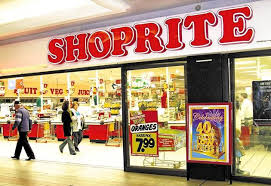

SHOPRITE
 Operating hours:Mon - Sat: 07:00pm - 19:00pm
Sun and holidays: 08:00pm - 18:00pm
Shoprite-Checkers offer consumers fresh grocery options while also remaining and affordable option. They have further provided proof of their willingness to save South Africans money through their Shoprite U-SAVE stores which are mainly aimed at giving South Africans more value for money.